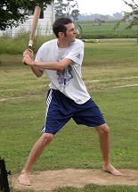
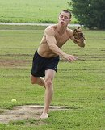
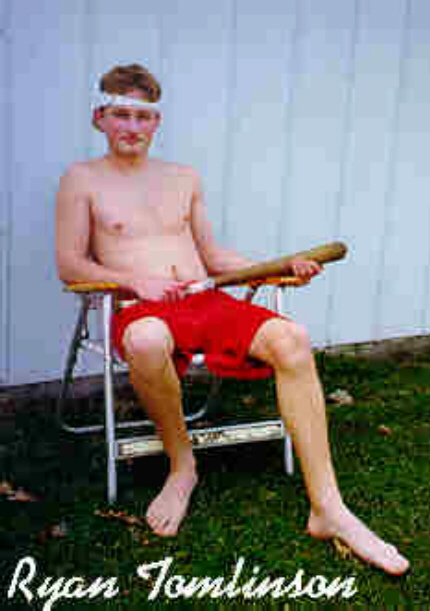

|
2005 Game Summaries and Box Scores
Preview . Opening Day - June 11 . July 3 . August 20 . September 17
2005 Chair Baseball Opener Set for June 11
May 13 – Yet another chair baseball season is rapidly approaching as the league announced today that Saturday, June 11 will be Opening Day 2005. Game time for the opener is scheduled to take place at 10 a.m. It is just one day away from being the latest Opening Day in league history (June 12, 2004). Now entering its 8th official season, the league is hoping to return to its early days by adding a number of games to this year’s schedule. “The first few years the league just exploded,” commented Commissioner Patrick Cork. “Since then, we have struggled to get more than 10-12 dates, but hopefully that will change this summer.”
Over the first three full seasons (1998-2000), the league played an average of 34 games each year. However, over the last four years (2001-04), a total of just 46 games have been played. “The interest is still there, it’s just a lot harder to get games scheduled with people living so far away in different directions.” 
Last year marked an all-time low for games played when just 8 contests took place at Corklestick Park. As a result, the league had record lows in nearly every major hitting category, however the pitching stats were by far the best in history. “Last year, every time we played the wind was blowing straight in from center field. I’ve never seen anything like it,” added Cork. Runs were at a premium as the league only averaged scoring 4.4 total runs per game - the league average for homeruns per game over the first six years of the league was 4.4. Last year that number plummeted to 1.6. In all, just 13 homeruns were hit last year in 8 games. “Usually the first few weeks of the season are tough conditions because it’s cooler and a little breezy, but when the summer months come around the ball usually jumps out of here. Last year was amazingly poor hitting conditions all year long.”
The pitching numbers, on the other hand, were dazzling. The league, as a whole, posted an ERA of 2.04. The previous low for ERA in a season was 3.73 in 2003. A sign of how tough runs were to come by was Tony Cork’s season. The all-time wins leader finished the year just 1-3, despite a 1.75 ERA. In his 3 losses, Cork’s teams combined to score just 3 runs. There were 4 shutouts and each of the 8 games resulted in one team scoring fewer than 3 runs. “The implementation of the new chair in 2003 probably had a little to do with the drop in offensive numbers the last two years because it created a larger strike zone, but the biggest impact last year was definitely the weather,” added Cork.
As for the 2005 season, Opening Day could be a “Who’s Who” of Chair  Baseball. Preliminary reports have a list of legends planning to take the field including Tony Cork, Patrick Cork, Josh Williamson and Greg Howard. Dustin Waldrop and Ryan Tomlinson are both possibilities as well. “If we could get an Opening Day lineup featuring 6 all-time greats, that would really get us started on the right track,” remarked the Commissioner.
In offseason news, speculation remains rampant regarding the status of players Dave Rueth and Greg Howard. Rueth participated in 5 games in 2002 and 4 games in 2003, but was mysteriously absent all of last season. The same goes for Greg Howard, who has played in 108 career games, but failed to make an appearance last summer. Rumors have circulated that both players were suspended for the season after testing positive for steroids, however the league has declined comment on both players.  The biggest red flag was when Rueth reported to camp last week 30 pounds less than his listed weight for 2003. Howard was also reportedly found to be in possession of “The Original Whizzinator” while preparing to board his flight to testify at the BALCO hearings, but those rumors were never authenticated. “We’re hoping that Dave and Greg both see some playing time this year,” said a back-pedaling Cork. “Both of them are widely popular and provide some name-recognition for our fans.” The biggest red flag was when Rueth reported to camp last week 30 pounds less than his listed weight for 2003. Howard was also reportedly found to be in possession of “The Original Whizzinator” while preparing to board his flight to testify at the BALCO hearings, but those rumors were never authenticated. “We’re hoping that Dave and Greg both see some playing time this year,” said a back-pedaling Cork. “Both of them are widely popular and provide some name-recognition for our fans.”
Although the whereabouts of Rueth and Howard are known, the same cannot be said for Ryan Tomlinson.  Tomlinson, who played in 75 games from 1998-2001 has been absent for each of the past 3 years. Tomlinson’s last game in 2001 resulted in him being knocked from the game after taking a line drive off his pitching hand, and most believed he missed the 2002 season after suffering several setbacks with his rehabilitation. There was some speculation that he had Tommy John surgery the following year, but his absence last year continues to result in nothing but question marks. Tomlinson was actually slated to play on Opening Day last year summer, but when game day rolled around he was a no-show. “We had spoken with him earlier in the week and he said he would definitely be there,” added Cork. “However he never showed up and we never heard back from him. It remains a mystery. I can tell you there were thousands of disappointed fans after all of the hype we had heading into that game about his return. We have not received retirement papers from Ryan, so we have to assume he is still active. Until we hear otherwise, we have to believe he still plans on playing again. It would be pretty special if Ryan could find his way to the park for Opening Day, but we aren’t holding our breath.”
**Update May 19 - The opening day rosters have been officially announced. The players who will be participating are Patrick Cork, Tony Cork, Greg Howard, Josh Williamson, Dustin Waldrop and Ryan Tomlinson...yes Tomlinson says he'll be there. Players will be traveling a record total of 1,188 miles to play including Williamson's trip of 576 miles and Howard's trek of 265 miles.
Back to top
Historic 2005 Opening Day at Corklestick. . . . . . . . . .Click Here for Pictures
June 11th - Saturday was one of the more memorable days of baseball at Corklestick Park as six of the all-time greats were on hand for the season opener of the 2005 season. Six of the top seven players in career games played, who have combined to play 553 total games over the first seven 7 years of the league, provided a pair of exciting one-run games. Patrick Cork, Greg Howard and Tony Cork faced off against Dustin Waldrop, Josh Williamson and Ryan Tomlinson - who was making his first appearance since the 2001 season.
The game was delayed nearly an hour as the players awaited the arrival of Dustin Waldrop who was reported being seen getting a pedicure before the game. The excitement built leading up to the game as 18-day old Caleb Cork, son of Patrick and grandson of Tony, threw out the ceremonial first pitch. All-time wins leader Tony Cork matched up against Waldrop in the first game. The conditions seemed to favor the pitchers once again as a steady breeze blew in from center field for the majority of the afternoon. The visitors got on the board first in the top of the 4th inning as Waldrop, batting left-handed for the first time in the game, hammered a solo homerun into the pine trees in centerfield. More thunder followed in the 5th when Tomlinson turned on a Tony Cork fastball for a solo homerun of his own as the ball squeezed inside the foul pole down the left field line. It was Tomlinson's first homer since June 26, 2000.
Despite a number of hits through the first few innings, the home squad was unable to put any runs on the board against Waldrop until the bottom of the 6th inning. After Tony Cork singled for the second time in the inning, Patrick Cork lined a 2-out, 3-run homerun over the garage in right center to give his team the lead. The homerun was the only extra-base hit of the game for the home squad. The 3-2 score would hold up as Tony pitched through 7 innings before giving way to Patrick who struck out 5 batters over the final 2 innings for the save.
Tony picked up win #45 of his career giving up 2 runs and 7 hits over 7 innings. Waldrop's only mistake cost him dearly as he was saddled with the loss despite a solid 8-inning performance. In his return, Tomlinson led all hitters with 5 hits in 11 at bats. Patrick Cork was just 3-for-12, but his 3-run homer was the difference, and was his 240th of his career. Tony and Greg Howard were both 4-for-12 in the game.
Stats for 6/11/05 (Game #1)
(Dustin Waldrop, Josh Williamson, Ryan Tomlinson)
vs. (Greg Howard, Tony Cork, Patrick Cork)
| DW/JW/RT |
000 |
110 |
000 |
- |
2 |
8 |
1 |
| GH/TC/PC |
000 |
003 |
00X |
- |
3 |
11 |
0 |
Hitting
D.Waldrop 2-12, HR, RBI, R; J.Williamson 1-11; R.Tomlinson 5-11, HR, RBI, R
G.Howard 4-12, T.Cork 4-12, 2R; P.Cork 3-12, HR, 3RBI, R
Pitching
T. Cork (W) 7IP, 2ER, 7H, K; D.Waldrop (L) 8IP, 3ER, 11H, 2K; P.Cork (S) 2IP, 0R, 1H, 5K
Defense
Assists: J.Williamson 2, P.Cork 1, R.Tomlinson 1
Errors: R.Tomlinson 1
Game 2 - The breeze stiffened for the second game, as it appeared runs would be even harder to come by with Josh Williamson and Greg Howard facing off on the mound. However, both teams jumped out to quick starts. The visitors rallied for 2 runs in the first as Patrick and Tony each had 2 hits capped off by a 2-run, 2-out double by Patrick to give Howard an early 2-0 lead. However, the lead would not last long as Williamson lined a 2-run triple into the dog's pen to tie the game and Waldrop followed with a 2-run shot over the garage for a quick 4-2 advantage after just one inning of play. In what would be a sign of things to come, Williamson's defense struggled at times behind him, as Tomlinson got turned around and was unable to run down a long drive in the 3rd off the bat of Patrick Cork that resulted in a solo homerun to cut the lead to 4-3. In the fifth, Cork hit another blast over Tomlinson's head in left that he was unable to catch up to for another homer, and the score was knotted at 4 after 5 innings of play.
Meanwhile, Howard rebounded from his first inning struggles and flirted with history as the game wore on. Following Waldrop's homer in the first inning, Howard retired a chair baseball record 26 consecutive batters (8 2/3 innings). The game remained scoreless through nine innings and in the top of the 10th, Patrick hit another high drive to deep left field. This time Tomlinson was able to get a good read on the fly, but the ball bounced out of his glove for a 4-base error to break the 4-4 tie. Howard pitched a scoreless 10th for the complete game 5-4 victory. A single by Waldrop in the bottom of the inning was the first hit for the visitors since the first inning.
After the first inning struggles, Howard was masterful allowing 4 runs on just 5 hits in 10 innings of work. He nearly pitched an in-game no-hitter as he went the middle 8 2/3 innings without allowing a hit. He struck out 5 in the win. Williamson was the hard-luck loser allowing 5 runs (4 earned) on 16 hits in 10 innings. Patrick Cork picked up the pace in game two finishing 7-for-15 with 2 homers and 4 RBI. Tony Cork added 6 singles and scored a run. Williamson, Waldrop and Tomlinson combined to go just 5-for-35, with 4 of those hits coming in the first inning.
Tony and Patrick each finished the doubleheader 10-for-27, and Patrick had 3 homeruns, 7 RBI and 5 runs. Howard finished the day 7-for-28. Tomlinson led the way for his squad with 6 hits in 23 at-bats including a solo homerun. Waldrop (4-for-23) inched further ahead of Williamson (3-for-23) for second place in the career homerun race with his two dingers on the day. Waldrop now has 74 career homeruns and Williamson has 71. Tony Cork became just the second player in history to record his 500th hit (507 total) and Greg Howard became the third player to reach the 300-hit milestone (301 total).
Stats for 6/11/05 (Game #2)
(Greg Howard, Tony Cork, Patrick Cork) vs. (Dustin Waldrop, Josh Williamson, Ryan Tomlinson)
| GH/TC/PC |
201 |
010 |
000 |
1 |
- |
5 |
16 |
0 |
| DW/JW/RT |
400 |
000 |
000 |
0 |
- |
4 |
5 |
2 |
Hitting
G.Howard 3-16, T.Cork 6-15, R; P.Cork 7-15, 2B, 2HR, 4RBI, 4R
R.Tomlinson 1-12, R; J.Williamson 2-12, 3B, 2RBI, 2R; D.Waldrop 2-11, HR, 2RBI, R
Pitching
G.Howard (W) 10IP, 4ER, 5H, 5K; J.Williamson (L) 10IP, 5R, 4ER, 16H, 2K
Defense
Assists: J.Williamson 2, P.Cork 1
Errors: R.Tomlinson 1, D.Waldrop 1
Back to top
Marathon Holiday Game. . . . . . . . . .Click Here for Pictures
July 3rd - What was expected to be a calm holiday weekend doubleheader turned into a marathon single game on Sunday in what is believed to be the longest game in chair baseball history. Warm conditions and very little breeze led most to believe runs may be easy to come by, but superb pitching and some outstanding defense stifled both offenses for much of the day. The team of Corks (Tony, Chris and Patrick) threatened first off of Carter Thorlton in the 2nd inning. With 2 on and 2 outs, Chris sent a liner to deep center that would have been at least a triple, but Nate Owens was able to make a running grab to end the threat. Two innings later, with two on, Patrick Cork hammered a ball into the ditch in left field but Robert Trimble was able to make a leaping grab to rob the homerun and keep the game 0-0. Meanwhile, Tony Cork was cruising, not allowing a hit until the 5th inning. Cork would allow just 3 hits over 8 2/3 innings thanks to a heavy sinker and 5 outfield assists from Patrick to help him escape trouble. The game remained scoreless into the 9th when Tony allowed a 2-out double to move runners to 2nd and 3rd with 2 outs. Patrick Cork came on in relief to try to squash the rally, but Nate Owens was able to bloop a ball that hit on the right field line for what appeared to be the first RBI of the game, but Patrick notched his 6th outfield assist of the day to keep the game scoreless. In the bottom of the inning, Patrick nearly won the game with a homerun down the right field line, but the ball curved just in front of the fair pole and yet another opportunity slipped away. The final threat from the home squad came in the bottom of the 12th as Patrick blasted a ball into centerfield that narrowly missed the homerun line for a leadoff triple. However, neither Chris, Tony or Patrick could drive in the run with a hit and the game continued. Finally, in the top of the 14th, Robert Trimble reached on a 2-out single and Carter Thorlton lifted a ball into right-center that found the roof of the garage for a 2-run homer and the home team would not score in the bottom of the frame for the 2-0, 14-inning final. The homerun was Thorlton's first hit of the afternoon.
"It was definitely a frustrating day," remarked Patrick. "All game long we had guys on base and couldn't score. We were literally a few feet away from scoring 6 or 7 runs with a couple near misses on homeruns and Nate's catch in the 2nd robbing Chris. Once we missed our early opportunites, Carter really settled down and we couldn't get anything going. For them to only get 6 hits in 14 innings and win is very disappointing, but that's chair baseball for you." Despite the long day, the two teams combined for just 16 hits in 14 innings (.190 average). Thorlton was able to escape trouble all afternoon allowing 10 hits and striking out 14, but didn't allow a single run to pick up the win. Tony Cork was brilliant yet again allowing just 3 hits and no runs while striking out 8 in 8 2/3 innings. Patrick Cork took the loss allowing 2 runs on 3 hits and striking out 6 in 5 1/3. He also finished the game with 6 outfield assists.
Neither team had much offense to show as Patrick and Tony led the day with each going 5-for-18. Chris Cork, in his first action since last July, suffered through a very long 0-for-18 afternoon with 9 strikeouts. As mentioned, Thorlton had just one hit on the day (1-for-15), but it was a big one. Nate Owens finished 3-for-16 and Robert Trimble was 2-for-15 with a run scored. The 14-inning game is believe to be the longest game in league history.
Stats for 7/3/05
(Nate Owens, Robert Trimble, Carter Thorlton)
vs. (Tony Cork, Chris Cork, Patrick Cork)
| NO/RT/CT |
000 |
000 |
000 |
000 |
02 |
- |
2 |
6 |
2 |
| TC/CC/PC |
000 |
000 |
000 |
000 |
00 |
- |
0 |
10 |
0 |
Hitting
N.Owens 3-16, 3B; R.Trimble 2-15, R; C.Thorlton 1-15, HR, 2RBI, R
T.Cork 5-18, C.Cork 0-18; P.Cork 5-18, 3B
Pitching
C.Thorlton (W) 14IP, 0ER, 10H, 14K; T.Cork (ND) 8 2/3IP, 0ER, 3H, 8K; P.Cork (L) 5 1/3IP, 2ER, 3H, 6K
Defense
Assists: P.Cork 6, C.Thorlton 1
Errors: C.Thorlton 1, N.Owens 1
Windy Day REsults in Power Surge. . . . . . . . . .Click Here for Pictures
August 20th - After nearly 2 months between games and 2 years of poor hitting conditions, the wind was finally blowing out on Saturday leading to an offensive show. In game one, Tony Cork faced off against Dave Rueth who was playing for the first time since the 2003 season. Things were rocky early for Cork who allowed a solo homerun to Rueth in the 2nd inning, and then back-to-back-to-back homeruns in the 3rd to Chris Cork, Nate Owens and Rueth to make the lead 4-0 thru 3 innings. However, Tony's youngest son Patrick came to the rescue in a huge way in the 4th inning. After Patrick, Evan Woodard and Tony all singled, Patrick blasted a long drive just inside the foul pole down the left field line for a game-tying grand slam. 3 batters later Patrick hit a 2-run homer to left again to give his team a 6-4 lead, and with 2 outs, he capped an historic half inning with another 2-run homerun and suddenly the lead was 8-4. In the fifth, Cork hit his fourth consecutive homerun, this one a solo shot, to move the advantage to 9-4. A pair of solo homers from Rueth in the fifth and the sixth weren't enough as Patrick would close out the final 2 innings for the 9-6 win.
Patrick powered his way to a 6-for-13 game with 4 homeruns and 9 RBI. Rueth matched Cork with 4 homers, but all four were solo shots. The losers actually out-homered the winners 6 to 4, but came up short. Tony Cork survived a shaky start to pick up the win allowing 6 runs in 7 innings on 10 hits. Rueth suffered the loss giving up 9 runs (8 earned) on 13 hits - 8 of the runs coming in one inning.
Stats for 8/20/05 (Game #1)
(Tony Cork, Patrick Cork, Luke Yochum, Evan Woodard)
vs. (Nate Owens, Dave Rueth, Chris Cork)
| TC/PC/LY/EW |
000 |
810 |
000 |
- |
9 |
13 |
0 |
| NO/DR/CC |
013 |
011 |
000 |
- |
6 |
11 |
1 |
Hitting
T.Cork 5-14, 2B, 3B, 2R; P.Cork 6-13, 4HR, 9RBI, 5R; L.Yochum 0-6; E.Woodard 2-8, 2R
N.Owens 2-13, HR, RBI, R; D.Rueth 5-13, 4HR, 4RBI, 4R; C.Cork 4-12, 2B, 3B, HR, RBI, R
Pitching
T. Cork (W) 7IP, 6ER, 10H, 8K; D.Rueth (L) 9IP, 9R, 8ER, 13H, 6K; P.Cork (S) 2IP, 0R, 1H, 4K
Defense
Assists: T.Cork 2; D.Rueth 1
Errors: N.Owens 1
Game 2 - With little change in the weather conditions, the second game was set for just 7 innings, but there was plenty of excitement in the shortened affair. Patrick Cork took the mound for the home team as Tony Cork attempted to throw both games of the doubleheader for the visitors. After a 1-2-3 top of the first by Patrick, Tony ran into immediate trouble in the bottom of the inning. Luke Yochum, who made his debut in the first game, but didn't record a hit, struck first with a 2-run homerun down the left field line. Patrick followed later with an RBI single, but they left the bases loaded to end the inning up 3-0, despite getting 6 hits in the frame. Chris Cork pushed the lead to 4-0 in the second with an RBI single, Patrick added a 2-run homer in the 5th and Chris blasted a solo shot in the sixth to account for the 7 runs. The only runs for the visitors came on a 2-run homerun by Evan Woodard in the sixth inning as Patrick cruised to victory on the mound by a score of 7-2. Tony took the loss allowing 7 runs (5 earned) on 14 hits in just 6 innings while Patrick allowed one earned run on 7 hits to pick up the win. At the plate, Patrick finished 5-for-11 with a homer and 3 RBI, Chris was 5-for-12 with an HR and 2 RBI and Luke Yochum was 4-for-11 with a 2 run homerun.
The hitters were out in full force as Patrick finished the day 11-for-24 with 5 homeruns and 12 RBI. Dave Rueth finished 7-for-23 with 4 homers and 4 RBI and Chris Cork, who was 0-for-18 coming into the day was 9-for-24 with 2 triples, 2 homeruns and 3 RBI.
Stats for 8/20/05 (Game #2)
(Tony Cork, Dave Rueth, Evan Woodard) vs. (Chris Cork, Patrick Cork, Luke Yochum)
| TC/DR/EW |
000 |
002 |
0 |
- |
2 |
7 |
3 |
| CC/PC/LY |
310 |
021 |
X |
- |
7 |
14 |
1 |
Hitting
T.Cork 3-10, R; D.Rueth 2-10; E.Woodard 2-9, HR, 2RBI, R
C.Cork 5-12, 3B, HR, 2RBI, 2R; P.Cork 5-11, HR, 3RBI, 3R; L.Yochum 4-11, HR, 2RBI, 2R
Pitching
P.Cork (W) 7IP, 2R, ER, 7H, 5K; T.Cork (L) 6IP, 7R, 5ER, 14H, 5K
Defense
Assists: T.Cork 4, D.Rueth 1, P.Cork 1
Errors: E.Woodard 2, C.Cork 1, T.Cork 1
Back to top
Barmes and Cork Lead Team to Doubleheader Sweep. . . . . . . . . .Click Here for Pictures
September 17th - The latest games in chair baseball history were played Saturday at Corklestick Park in rather unusual fashion. With only five players available, Holly Cork filled in admirably in the first game as the all-time left fielder leaving the game as a 2-on-2 affair. Due to the short rosters, the game was set to last just 6 innings. With a steady breeze blowing in from center, Patrick Cork and Evan Barmes struck first in the third on an RBI single from Barmes. However, Greg Howard and Evan Woodard tied the game in the top of the 4th on a solo homerun from Howard. The home team responded in the bottom of the frame with a 2-run homer from Patrick and then tacked on two more runs in the fifth on a 2-run triple from Patrick for a 5-1 lead. Howard would drive in a run on a 6th inning triple, but it wasn't enough as the game was called after 5 1/2 innings with the final score 5-2.
Cork picked up the win allowing 2 runs on 4 hits while striking out 7 in 5 innings of work. In his first ever game, Barmes finished an impressive 5-for-14 with an RBI and 2 runs scored. Cork was 6-for-13 with two triples, a homerun and 4 RBI. Greg Howard suffered the loss allowing 5 runs (3 earned) in 5 innings.
Stats for 9/17/05 (Game #1)
(Evan Woodard, Greg Howard)
vs. (Evan Barmes, Patrick Cork)
| EW/GH |
000 |
101 |
|
- |
2 |
4 |
1 |
| EB/PC |
001 |
22X |
|
- |
5 |
11 |
0 |
Hitting
E.Woodard 2-11, R; G.Howard 2-10, 3B, HR, 2RBI, R
E.Barmes 5-14, RBI, 2R; P.Cork 6-13, 2 3B, HR, 4RBI, 3R
Pitching
P. Cork (W) 5IP, 2ER, 4H, 7K; G.Howard (L) 5IP, 5R, 3ER, 11H, 3K; E.Barmes IP, 0R, 0H, 2K
Defense
Assists: G.Howard 2
Errors: G.Howard 1
Game 2 - Robert Trimble reached the park in time for the second game which was played in the conventional 3-on-3 format. Patrick Cork, pitching both ends of the doubleheader, squared off against Trimble in a classic pitcher's duel. The visitors loaded the bases off of Trimble in the top of the 1st, but couldn't bring a run home missing a golden opportunity to get on the board early. Greg Howard struck first for the home team taking Patrick deep into the dog's pen for a solo homer in the first inning. Staked to an early 1-0 lead, Trimble would evade trouble until the 5th when Evan Barmes connected on a single with the bases loaded to tie the game. Patrick Cork followed with what appeared to be another single, but Howard threw him out from deep left field to keep the game tied at 1. Holly Cork nearly drove in the go-ahead run in the bottom of the sixth with a near base hit to right with a runner on 3rd, but husband Patrick got the outfield assist on the play keeping the game knotted at 1 again. Trimble would leave the game after 7 innings and Greg Howard relieved. Howard was met with 4 consecutive hits in the top of the 8th including an RBI double from Barmes and an RBI single from Cork that resulted in the final score of 3-1.
Cork was outstanding on the mound allowing just one run and four hits while striking out 16 batters, just one shy of his career high and 4 shy of the single-game record of 20. At the plate, he was 7-for-14 with a double, triple and an RBI. Barmes had another solid outing at the plate going 5-for-14 again with 2 RBI, including the game winner in the top of the 8th. Trimble had a no decision allowing one run and 9 hits in 7 innings of work. Howard suffered the loss allowing the two 8th inning runs.
On the day, Cork and Barmes teamed up for a pair of victories thanks to some great offensive play. Cork finished the doubleheader 13-for-27 with 5 RBI and 4 runs scored. He also won both games of the doubleheader on the mound throwing 14 innings and allowing just 3 runs on 8 hits while striking out 23 batters. Barmes finished his debut 10-for-28 with a double, 3 RBI and 3 runs scored. Greg Howard suffered two losses on the day allowing 5 earned runs in 7 innings of work. Howard also went 5-for-21 at the plate, with all 5 hits being for extra bases (3 triples, 2 homeruns).
Stats for 9/17/05 (Game #2)
(Evan Barmes, Patrick Cork, Evan Woodard) vs. (Holly Cork, Greg Howard, Robert Trimble)
| EB/PC/EW |
000 |
010 |
020 |
- |
3 |
14 |
1 |
| HC/GH/RT |
100 |
000 |
000 |
- |
1 |
4 |
0 |
Hitting
E.Barmes 5-14, 2B, 2RBI, R; P.Cork 7-14, 2B, 3B, RBI, R; E.Woodard 2-13, R
H.Cork 0-10; G.Howard 3-11, 2 3B, HR, RBI, R; R.Trimble 1-10; C.Howard 0-1
Pitching
P.Cork (W) 9IP, ER, 4H, 16K; G.Howard (L) 2IP, 2ER, 5H, K; R.Trimble 7IP, ER, 9H, 8K
Defense
Assists: P.Cork 1, G.Howard 1
Errors: E.Barmes 1
Back to top
|